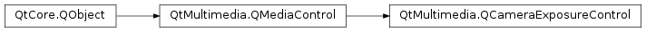

QCameraExposureControl¶
Detailed Description¶
The
PySide2.QtMultimedia.QCameraExposureControlclass allows controlling camera exposure parameters.The
QCameraExposureclass is the usual method of adjusting exposure related parameters when using camera functionality. This class provides a more complete but less easy to use interface, and also forms the interface to implement when writing a new implementation ofPySide2.QtMultimedia.QCamerafunctionality.You can adjust a number of parameters that will affect images and video taken with the corresponding
PySide2.QtMultimedia.QCameraobject - see theQCameraExposureControl.ExposureParameterenumeration.The interface name of
PySide2.QtMultimedia.QCameraExposureControlisorg.qt-project.qt.cameraexposurecontrol/5.0as defined inQCameraExposureControl_iid().See also
QCameraExposurePySide2.QtMultimedia.QCamera
-
class
PySide2.QtMultimedia.QCameraExposureControl([parent=nullptr])¶ Parameters: parent – PySide2.QtCore.QObjectConstructs a camera exposure control object with
parent.
-
PySide2.QtMultimedia.QCameraExposureControl.ExposureParameter¶ Constant Description QCameraExposureControl.ISO Camera ISO sensitivity, specified as integer value. QCameraExposureControl.Aperture Lens aperture is specified as an qreal F number. The supported apertures list can change depending on the focal length, in such a case the exposureParameterRangeChanged() signal is emitted. QCameraExposureControl.ShutterSpeed Shutter speed in seconds, specified as qreal. QCameraExposureControl.ExposureCompensation Exposure compensation, specified as qreal EV value. QCameraExposureControl.FlashPower Manual flash power, specified as qreal value. Accepted power range is [0..1.0], with 0 value means no flash and 1.0 corresponds to full flash power. This value is only used in the
manual flash mode.Constant Description QCameraExposureControl.TorchPower Manual torch power, specified as qreal value. Accepted power range is [0..1.0], with 0 value means no light and 1.0 corresponds to full torch power. This value is only used in the
torch flash mode.Constant Description QCameraExposureControl.FlashCompensation Flash compensation, specified as qreal EV value. QCameraExposureControl.SpotMeteringPoint The relative frame coordinate of the point to use for exposure metering in spot metering mode, specified as a PySide2.QtCore.QPointF.QCameraExposureControl.ExposureMode Camera exposure mode. QCameraExposureControl.MeteringMode Camera metering mode. QCameraExposureControl.ExtendedExposureParameter The base value for platform specific extended parameters. For such parameters the sequential values starting from should be used.
-
PySide2.QtMultimedia.QCameraExposureControl.actualValue(parameter)¶ Parameters: parameter – PySide2.QtMultimedia.QCameraExposureControl.ExposureParameterReturn type: object Returns the actual exposure
parametervalue, or invalid QVariant() if the value is unknown or not supported.The actual parameter value may differ for the requested one if automatic mode is selected or camera supports only limited set of values within the supported range.
-
PySide2.QtMultimedia.QCameraExposureControl.actualValueChanged(parameter)¶ Parameters: parameter – PySide2.QtCore.int
-
PySide2.QtMultimedia.QCameraExposureControl.isParameterSupported(parameter)¶ Parameters: parameter – PySide2.QtMultimedia.QCameraExposureControl.ExposureParameterReturn type: PySide2.QtCore.boolReturns true is exposure
parameteris supported by backend.
-
PySide2.QtMultimedia.QCameraExposureControl.parameterRangeChanged(parameter)¶ Parameters: parameter – PySide2.QtCore.int
-
PySide2.QtMultimedia.QCameraExposureControl.requestedValue(parameter)¶ Parameters: parameter – PySide2.QtMultimedia.QCameraExposureControl.ExposureParameterReturn type: object Returns the requested exposure
parametervalue.
-
PySide2.QtMultimedia.QCameraExposureControl.requestedValueChanged(parameter)¶ Parameters: parameter – PySide2.QtCore.int
-
PySide2.QtMultimedia.QCameraExposureControl.setValue(parameter, value)¶ Parameters: - parameter –
PySide2.QtMultimedia.QCameraExposureControl.ExposureParameter - value – object
Return type: PySide2.QtCore.boolSet the exposure
parametertovalue. If a null or invalidPySide2.QtCore.QVariantis passed, backend should choose the value automatically, and if possible report the actual value to user withQCameraExposureControl.actualValue().Returns true if parameter is supported and value is correct.
- parameter –
© 2018 The Qt Company Ltd. Documentation contributions included herein are the copyrights of their respective owners. The documentation provided herein is licensed under the terms of the GNU Free Documentation License version 1.3 as published by the Free Software Foundation. Qt and respective logos are trademarks of The Qt Company Ltd. in Finland and/or other countries worldwide. All other trademarks are property of their respective owners.